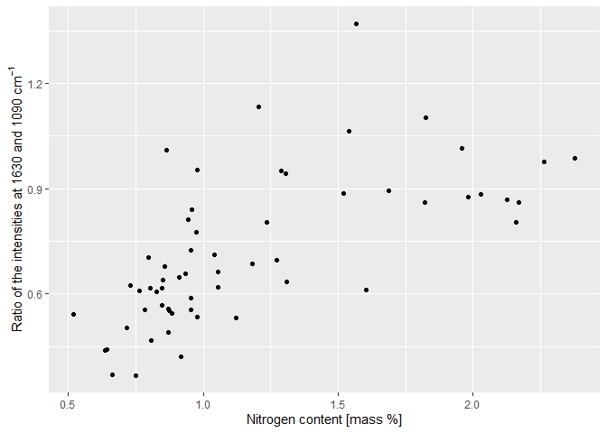

Overview
‘irpeat’ is an R package which contains functions to analyze infrared spectra of peat samples. These functions are functions to compute humification indices and functions to predict peat properties. Some functions may also work with organic matter samples in general.
The following peat properties can be predicted (note model-specific limitations described in the documentation):
- Elemental contents (C, H, N, O, S, P, K, Ti)
- isotope values (δ13C and δ15N)
- physical properties (bulk density, volume fraction of solids, non-macroporosity, macroporosity, saturated hydraulic conductivity, specific heat capacity, dry thermal conductivity)
- standard Gibbs free energy of formation (ΔGf0)
- electrochemical properties (electron accepting capacity, electron donating capacity)
- microbial nitrogen content (modified version of the model described in Reuter et al. (2020))
- The degree of decomposition (, the fraction of initial mass lost (Teickner et al. 2026; Teickner 2025b)).
The package also contains functions to predict holocellulose and Klason lignin contents (Hodgkins et al. 2018; Teickner and Knorr 2022), but these models are biased for peat samples (Teickner and Knorr 2022).
How to install
You can install ‘irpeat’ from GitHub using R via:
remotes::install_github(repo = "henningte/irpeat")‘irpeat’ relies on the R package ‘ir’ for handling infrared spectra.
If you want to use the prediction models, you have to install the ‘irpeatmodels’ package (Teickner 2025a) in addition to the ‘irpeat’ package:
remotes::install_url("https://zenodo.org/record/17187912/files/irpeatmodels_0.1.0.tar.gz", type = "source")How to use
You can load ‘irpeat’ in R with:
library(irpeat)
# load additional packages needed for this tutorial
library(ir)
library(irpeatmodels)
library(ggplot2)
library(units)
library(rstan)You can test ‘irpeat’ with sample data from the R package ‘irpeat’:
irpeat::irpeat_sample_data
#> # A tibble: 59 × 11
#> id_90 sample_id measurement_id spectra C H N O S
#> * <int> <int> <int> <named lis> [g/g] [g/g] [g/g] [g/g] [g/g]
#> 1 1 1 23 <df> 0.479 0.0562 0.00968 0.398 0.00395
#> 2 2 2 32 <df> 0.447 0.0561 0.00478 0.443 0.00008
#> 3 3 3 38 <df> 0.460 0.0560 0.00788 0.412 0.00008
#> 4 5 5 52 <df> 0.471 0.0585 0.00755 0.414 0.00008
#> 5 6 6 54 <df> 0.502 0.0550 0.0127 0.373 0.0013
#> 6 7 7 55 <df> 0.484 0.0557 0.0091 0.392 0.0012
#> 7 8 8 56 <df> 0.466 0.0566 0.00725 0.401 0.0008
#> 8 9 9 57 <df> 0.490 0.0576 0.00885 0.394 0.0013
#> 9 10 10 24 <df> 0.459 0.0560 0.00838 0.454 0
#> 10 11 11 25 <df> 0.465 0.0566 0.00723 0.420 0
#> # ℹ 49 more rows
#> # ℹ 2 more variables: d15N <dbl>, d13C <dbl>irpeat_sample_data contains transmission mid-infrared spectra of peat different samples (See Teickner et al. (2022) and Teickner et al. (2021) for details).
A simple workflow could be, for example, to baseline correct the spectra (using functions of the package ‘ir’) compute various humification indices and predict nitrogen content, dry bulk density, and saturated hydraulic conductivity of the samples.
set.seed(3453)
x <-
irpeat_sample_data |> # data
dplyr::mutate(
hi_1630_1090 =
irpeat_sample_data |>
ir::ir_bc(method = "rubberband") |> # baseline correction
ir::ir_interpolate(start = NULL, dw = 1) |> # interpolation
irp_hi(x1 = 1630, x2 = 1090) |> # humification index
dplyr::pull(hi_1630_1090)
) |>
ir::ir_interpolate(start = NULL, dw = 1) |>
irpeat::irp_nitrogen_content_1(do_summary = TRUE) |> # N content
irpeat::irp_bulk_density_1(do_summary = TRUE) |> # bulk density
irpeat::irp_macroporosity_1(do_summary = TRUE) # macroporosityx is identical to irpeat_sample_data, but contains an additional column for the computed humification index (h1_1630_1090) and the computed nitrogen content (nitrogen_content_1)
x
#> # A tibble: 59 × 18
#> id_90 sample_id measurement_id spectra C H N O
#> <int> <int> <int> <named li> (err) [… (err) [… (err) [… (err) […
#> 1 1 1 23 <tibble> 0.47902… 0.05625… 0.00968… 0.39768…
#> 2 2 2 32 <tibble> 0.44689… 0.0561(… 0.00478… 0.44283…
#> 3 3 3 38 <tibble> 0.45992… 0.05598… 0.00788… 0.41248…
#> 4 5 5 52 <tibble> 0.47086… 0.05853… 0.00755… 0.41433…
#> 5 6 6 54 <tibble> 0.50197… 0.05495… 0.0127(… 0.3732(…
#> 6 7 7 55 <tibble> 0.48440… 0.0557(… 0.0091(… 0.39185…
#> 7 8 8 56 <tibble> 0.46612… 0.05655… 0.00725… 0.40095…
#> 8 9 9 57 <tibble> 0.48976… 0.05765… 0.00885… 0.39395…
#> 9 10 10 24 <tibble> 0.45948… 0.05598… 0.00838… 0.45435…
#> 10 11 11 25 <tibble> 0.46475… 0.05663… 0.00723… 0.42003…
#> # ℹ 49 more rows
#> # ℹ 10 more variables: S (err) [g/g], d15N <dbl>, d13C <dbl>,
#> # hi_1630_1090 <dbl>, nitrogen_content_1 (err) [g/g],
#> # nitrogen_content_1_in_pd <lgl>, bulk_density_1 (err) [g/cm^3],
#> # bulk_density_1_in_pd <lgl>, macroporosity_1 (err) [L/L],
#> # macroporosity_1_in_pd <lgl>Plot of the humification index (ratio of the intensities at 1630 and 1090 cm-1 (Broder et al. 2012)) versus the nitrogen content:
x |>
ggplot(
aes(
x =
nitrogen_content_1 |>
units::set_units(value = "%") |>
quantities::drop_quantities(),
y =
hi_1630_1090
)
) +
geom_point() +
labs(
x = "Nitrogen content [mass %]",
y = expression("Ratio of the intensities at"~1630~and~1090~cm^{-1})
)
All computed quantities come with units and standard errors (thanks to the quantities package):
x$nitrogen_content_1[1:5]
#> Units: [g/g]
#> Errors: 0.001969791 0.001599808 0.001840442 0.001817805 0.002275452
#> [1] 0.010546122 0.006357339 0.008708040 0.008468676 0.012894928How to cite
Please cite this R package as:
Henning Teickner, Suzanne B. Hodgkins (2026). irpeat: Functions to Analyze Mid-Infrared Spectra of Peat Samples. Accessed 2026-08-16. Online at https://github.com/henningte/irpeat.
Licenses
Text and figures : CC-BY-4.0
Code : See the DESCRIPTION file
Data : CC BY 4.0 attribution requested in reuse. See the sources section for data sources and how to give credit to the original author(s) and the source.
Contributions
We welcome contributions from everyone. Before you get started, please see our contributor guidelines. Please note that this project is released with a Contributor Code of Conduct. By participating in this project you agree to abide by its terms.
Sources
The data and prediction models for holocellulose and Klason lignin (irp_content_h_hodgkins_model, irp_content_kl_hodgkins_model) are derived from Hodgkins et al. (2018) and were restructured to match the requirements of ir. The original article containing the data can be downloaded from https://www.nature.com/articles/s41467-018-06050-2 and is distributed under the Creative Commons Attribution 4.0 International License (https://creativecommons.org/licenses/by/4.0/). The data on Klason lignin and holocellulose content was originally derived from De la Cruz et al. (2016).
Modified prediction models for holocellulose and Klason lignin (model_holocellulose_2, model_klason_lignin_2) are derived from Teickner and Knorr (2022).
Data and models for the electrochemical accepting and donating capacities (EAC, EDC) of peat were derived from Teickner et al. (2022) and Teickner et al. (2021)